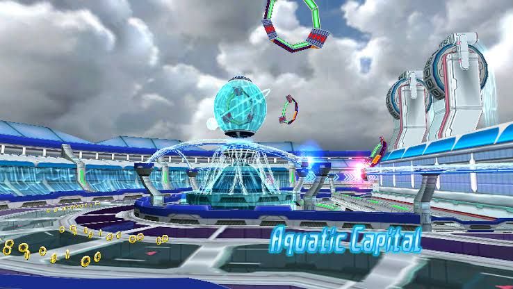
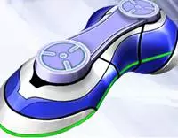

Sonic Riders foi lançado originalmente em 2005 e foi um jogo que fez muito sucesso para os fãs do Sonic, "inovando" com um esporte de modalidade única aos jogos do ouriço azul. Antes do seu lançamento original, no final de 2005, surgiu um rumor na Internet que os produtores já estavam pensando numa seqüela, para as plataformas da nova geração. Apenas em 2007 a Sega revelou finalmente a seqüela de Sonic Riders, que possuía o sub-nome de Zero Gravity.
Novidades
Por ser uma seqüela da série Riders, a diferença não fica tão grande quanto aos personagens e o seu estilo de jogo. Mesmo assim, contamos com mudanças na jogabilidade, em que o sistema de boost e de vácuo foram trocados pelo sistema de gravidade. Com ela, será possível utilizar obstáculos a seu favor, além de pegar caminhos pelas paredes e flutuar em alta velocidade, tudo controlado por uma barra.que ao esgotar, deixa essas funções inacessíveis.
Os personagens ainda andam em pranchas. A diferença fica no sistema de upgrade, no qual ao meio da fase será possível incrementar sua prancha, transformando-a em uma moto, por exemplo, adquirindo outras habilidades. O shopping de pranchas não está de fora e traz muitas opções que fará você ficar preso ao game por um bom tempo, caso queira habilitar todos os equipamentos.
O Menu traz alguns modos diferentes que seu antecessor. Já as missões, ainda continuam. Conseguindo um rank máximo em todas, você poderá habilitar extras para o game. Existe também a opção de entrar em um menu com extras, podendo observar todas as pranchas habilitadas, ouvir as músicas do game e as animações em CG.
Enredo
Desta vez o enredo segue um rumo mais “sério” que o primeiro Riders, que contava com vários elementos que lembravam histórias infantis e engraçadas. O jogo irá se passar alguns meses após os acontecimentos do primeiro Riders. O enredo gera-se a volta de um artefato que veio do espaço. Numa noite, esse meteoro caiu na cidade e Tails pegou-o. No dia a seguir, ele reúne-se com Sonic e Knuckles para falar sobre esse artefato, uma espécie de bracelete. Até que começam a ser perseguidos por vários robôs em Megalo Station, que foram afetados pela queda do meteorito. Ao fugir esse artefato demonstra seu poder para Sonic, permitindo-o controlar a gravidade e a aventura começa, possivelmente seguido de uma corrida contra os robôs na primeira fase do game.
Jet e os Babylon Rouges estão igualmente interessados neste artefato, assim como Eggman, que está sempre presente na história e a sua participação no jogo também já foi confirmada. No entanto parece que desta vez todos serão aliados a parar os robôs que “endoidecerem” com a queda do meteoro.
Personagens
Sonic Riders Zero Gravity traz os personagens principais de seu antecessor, e outros personagens extras também idênticos. A diferença fica pela a adição de Silver e Blaze, da própria franquia e de Amigo, do game "Samba De Amigo" e também de Billy Hatcher do game "Billy Hatcher And The Giant Egg". Além desses, existem outros dois robôs que estão presentes na história do game. Uma pena a lista ser muito homogênea ao primeiro Riders, não trazendo personagens clássicos como os Chaotix ou até mesmo o Metal Sonic. Os personagens do game são:
Sonic: O ouriço azul está no jogo, sendo o principal protagonista (junto com Jet). Dessa vez o ouriço achou uma misteriosa pedra que controla a gravidade, e sua prancha, a Blue Star, que tem a habilidade de deslizar em rails, teve o seu desenho refeito pelo Tails com suas curvas “refinadas” que comprovam suas melhoras. Suas fases são Megalo Station, Crimison Cater e Mobius Strip.
Tails: O grande ajudante do Sonic está presente, e ele tenta desvendar todos os poderes da pedra e suas origens, a sua prancha é a Yellow Tail e tem a habilidade de voar e passar pelos airturbos. Ela foi totalmente refeita por ele mesmo com um Metal "retorcível", suas fases são Botanical Kingdoom e Aquatic Capital.
Knuckles: O caçador de tesouros mais famoso dos games está presente, um personagem do tipo Power, ele no início só quer escapar dos robôs, mas no meio da história ele quer saber sobre a lenda das estrelas cadentes (que tem haver com as pedras). A sua prancha é a Red Rock, que pode virar uma moto. Ela foi redesenhada por Tail. Suas fases são Meteor Tech Premisers e Gigan Rocks.
Amy: A ouriça rosa está de volta, sempre atrás do Sonic, mas desta vez também está fugindo dos robôs e dos Babylons Rouges, pois tem uma das pedras. Sua prancha é a Pink Rose e também tem Grind, e esse é seu novo modelo mais novo, sua fase é a MeteorTech Sparkworks.
Jet: Ele está de volta ao jogo, querendo atrapalhar a vida do Sonic. Sua prancha é a Type J, que foi redesenhada por Wave para ter um formato de jato e é ótimo em relevos acidentados, suas fases são Gigan Device e Security Corridor.
Wave: A braço direito do Jet está de volta, a mecânica do tipo FLYING refez todas as pranchas dos Babylon Rouges, a sua a Type W foi refeita pra se adequar ao seu corpo compacto, sua fase é a Snow Kingdoom.
Storm: Ele continua na série, sempre tentando ajudar o Jet, mas se atrapalha e no meio tem papel importante. A sua prancha é a Type S e foi refeita para suportar grande massa, suas fases são Nigthside Rush e Tempest Waterway.
Eggman: Segundo principal vilão, sendo o principal o líder dos robôs, seu gear é a E-Rider, que tem a forma de moto e foi construída por ele se se adecúa a seus gostos. Desabilitavel após vencer a Babylon Story.

Shadow: Ele voltou como jogavel, sem interferir na história, um personagem tão bom quanto o Sonic e o Jet; sua prancha (isso mesmo, dessa vez ele usa uma prancha em vez de andar) é a Black Shot, feita pra desenvolver bastante velocidade. Desabilitavel após vencer a Heroes Story.
Silver: Está na sua quinta aparição nos jogos do Sonic, também não interfere na história, a sua prancha a Psique Wave é feito de um metal desconhecido. Desabilitável após vencer a Babylon Story.
Blaze: A princesa gato da outra dimensão estréia na série, também não interfere na história, a sua prancha é Flame Lance de Fabricante desconhecido. Desabilitável após vencer a Babylon Story.
SRC-GP: Robô que está atacando todos, ele se joga em forma de uma roda, batendo em alguma coisa joga pra longe, desabilitáavel após vencer a Babylon Story.

SRC-HD: Líder desses robôs, se transforma em Master Core ABIS no final do jogo, desabilitável após ganhar uma corrida contra o SCR-HD no modo Free Race.
Super Sonic: Ele está presente também em Sonic Riders Zero Gravity. Para liberá-lo é preciso terminar o Modo Mission com Rank Gold. Na prática vai destravar a prancha Chaos Emerald (que somente o Sonic pode usar).
Fases
Não muito diferente que o sistema de fases de seu antecessor, em Sonic Riders Zero Gravity, possuímos um total de 14 fases, sendo sete jogáveis para cada equipe. Sim, o mesmo esquema de equipes! Entrando no modo história, você terá acesso ao modo Heroes, com o trio Sonic, Knuckles e Tails. Terminando o modo Heroes, o time Babylon, formado de Jet, Wave e Swallow poderá ser escolhido. As fases são semelhantes umas as outras, contando com a diferença as vezes de terreno, clima, horário e caminhos. Além dessas fases, outras poderão ser habilitadas ao longo do game. Os monitores que lhe darão Rings ou pontos de gravidade continuam a toda no game. Existem três novos: Um monitor que "mancha" sua tela por um curto período, prejudicando a jogabilidade propositalmente, outro que não permite o uso da barra de gravidade e outro que deixa o personagem fora da prancha, aumentando sua velocidade e sendo possível o ataque em outros personagens, além de habilitar passagens secretas.
Nem todas as fases possuem a mesma missão que em Sonic Riders, que era sempre de chegar em primeiro. Em algumas missões, você terá de completar três voltas no circuito em um determinado tempo. A ordem dos personagens em cada fase é randômica, ou seja, você não poderá escolher com quem jogar em cada fase. As vezes, Amy poderá ser jogável no modo história, de acordo com o enredo da mesma.
Um dos fatores interessantes é que cada fase conta com um caminho secreto que só é habilitado sob condições de um item encontrado nos monitores. Existem Springs e caminhos um tanto estranhos espalhados pela fase. Ao tentar acessá-los normalmente, você será barrado. Será possível o acesso destruindo um monitor que contém um item, fazendo com que seu personagem corra a pé rapidamente. Como o sistema de gravidade foi implementado, não será possível atacar outros personagens sem esse item. Além de atacar personagens, chegando próximos desses atalhos trancados, será possível o acesso. As animações de cada fase são bem interessantes de se ver.
As missões ainda continuam em Sonic Riders Zero Gravity. Acessando a fase pelo modo de 1 Player, é possível escolher entre fazer a fase no modo história e fazer suas missões. Assim como seu antecessor, as tarefas são as mais variadas, como coletar um determinado número de Rings, ou fazer um determinado número de pontos, por meio de manobras. Dependendo de seu desempenho em cada missão, você ganhará um Rank.
As fases do game são:
- Megalo Station e Nightside Rush
- Botanical Kingdom e Snowy Kingdom
- MeteorTech Premises e MeteorTech Sparkworks
- Aquatic Capitol e Tempest Waterway
- Gigan Rocks e Gigan Device
- Crimson Crater e Security Corridor
- Astral Babylon e Mobius Strip
- 80's Boulevard e 90's Boulevard
Megalo Station
Fase capa do jogo, um gear Speed se dá muito bem nesta fase, pois possui dois grinds grandes, e só possui um atalho Power e dois Fly pequenos. Os atalhos de quando está andando são dois, uma mola no começo da volta, e um carro numa plataforma elevada, o ponto de Gravity Dive é depois da segunda rampa, faça o Meteor Burst (superturbo que recarrega a Barra de Gravidade) em vagões que flutuam. Existe dois atalhos pelas paredes: um no começo da volta, utilizando trens como chão (só acessível se você fizer uma Manobra num túnel de vento (só existe um na fase) e outra no começo da zona do Gravity Dive, sorte que só possui uma curva que usa o Gravity Control, mas os atalhos Speed e Power os desviam. Ballon 100 Rings: fica no 1º caminho na parede. Use um túnel de vento para alcançá-lo. Atenção! Pule na hora certa para pegar o trem ou não pegará os 100 rings que são pegos ao sair do trem.
Prepare-se para a Megalo Station de noite, trovejando e chovendo, sem dificuldade exagerada, os Power têm uma certa desvantagem, pois só possuem um atalho, a área do Gravity Dive é na segunda reta do jogo, como em Megalo Station, use os vagões flutuante para o Meteor Boost. Ballon 100 Rings: na área do Gravity dive, não use essa habilidade, no meio do caminho pela esquerda, o balão esta no ar com placas ao seu redor, pule no tempo certo e pronto.
NightSide Rush
Botanical Kingdom
Um reino botânico, no começo da volta é uma decida louca, depois quando entra na estufa, que tem uma mola que leva a uma colméia de vidro (sem abelha), te leva a um ponto mais a frente. Há um atalho num “negócio” deitado e mais a frente um atalho Power e uma curva para usar o Gravity Control, depois disso tem uma Trifurcação (um caminho com plantas a serem destruídas por motos e rodas [Power]), um caminho com anéis monitores, um cipó que serve de grind, uma mola e um atalho Fly (o Grind e os Air Goals levam para um caminho diferente). O ponto de Gravity Dive é no fim da volta, utilize os pedaços de raiz pra usar o Meteor Burst. Ballon 100 rings: seguindo pelo caminho comum, use um túnel de vento pra fazer um trick e usar mais um tronco como parede, no começo dele estará lá, esgotará todas as reservas de anéis, mas não faz todos os upgrade se ativarem.
A Botanical Kingdom está com uma massa polar por cima dela, traduzindo, muita neve, a direção é bem difícil, pois é muito escorregadio. Os grinds estão SUPER rápidos (chegando a velocidade a 285), bolas de neve não atrapalham mas para os Power ganha GP com elas. Cuidado com as que caem por cima, pode tirar anéis e te atrapalhar e muito, a área de Gravity Dive é no Final da volta mesmo, use os bonecos de neve pro Meteor Boost. Ballon 100 Rings: na área do Gravity Dive, o balão esta atrás do segundo boneco de neve, utilize o Gravity Control rapidamente para tirá-lo do caminho ou bata-o ou então use a habilidade Power.
Snowy Kingdom
MeteorTech Premises
Você correrá agora na fabrica dos robôs, existem vários caminhos dependo do nível de Trick que você fez, mas o legal é o meio da volta que você corre nas engrenagens. O ponto de Gravity Dive é no finzinho da volta, utilize os containeres para o Meteor Burst. Ballon 100 rings: siga por baixo, fique numa plataforma a direita, no fim faça um trick de qualquer nível e use o Gravity Control pra direita você pegará um atalho pela parede não indicado, o Balão estará a sua frente, impossível errar.
Com cenário com cor diferente, a única vez que a AMY é jogável com o estilo original no modo história, uma fase sem grandes atalhos; a Área do Gravity Dive é de novo no Final da volta, use cilindros para o Meteor Boost. Ballon 100 Rings: no último atalho Fly pela parte de baixo.
MeteorTech SparkWorks
Aquatic Capital
Uma das melhores fases do jogo, muito bifurcada, prefira os atalhos pela parede ou atalho de Habilidade, tobogãs apareceram a toda hora, utilize-os a seu favor. O ponto do Gravity Dive é no depois do tobogã, utilize bolhas d'água gigante pra fazer o Meteor Burst.
A Aquatic Capital está sob tempestade e está tudo alagado, de novo a pista vai ficar muito difícil de fazer curvas manualmente, no começo da volta onde tiver uma dobra de água aperte X (PS2) para fazer um trick (não precisa mexer no analógico para fazer as manobras); a Área de Gravity Dive é no Final da fase, utilize as vigas de concreto para o Meteor Boost. Ballon 100 Rings: na parte de baixo pelo caminho da esquerda está bem na parede, mas bem visível.
Tempest WaterWay
Gigan Rocks
Explore ruínas em algumas montanhas e cavernas, o cenário da largada e do começo da fase lembram a China e a Grande Muralha, em uma decida totalmente na vertical, no começo você pode optar por uma atalho Fly, mais na frente ou você segue ou pega um dos atalhos com o Gravity Control o da esquerda é para Power e o da Direita é para Speed. Ballon 100 rings: no final da volta, quando utiliza o Gravity Control, pedras ao seu redor sumiram, e fica fácil identificá-lo e pegá-lo.
Uma das melhores fases, dentro das montanhas de Gigan Rocks, prepare-se pra muitas curvas acentuadas, todos os tipos de Gears estão bem nesta fase (os Fly que os diga). O ponto de Gravity Dive é na parte final da volta, na verdade tem dois, uma pra caminho normal ou pegando um atalho Power ou um Grind, use as estátuas para o Meteor Boost. Ballon 100 Rings: no primeiro atalho pela parede, num corredor que vira, espere o atalho ser acessível e pegue-o, o balão está no lado esquerdo.
Gigan Device
Crimson Chater
Se aventure pelo lado de fora da Carmesi Tower, uma fase bastante desafiadora. Larga-se de uma plataforma ao invés de largar da fase, pois tem hora que sobe na vertical, que utiliza 4 vezes o Gravity Control na mesma volta, 3 Harpins (Curvas em forma de u) e 1 no começo da volta; o ponto de Gravity Dive é quando o cenário fica 'fechado', o Meteor Burst se utiliza com containeres circulares. Ballon 100 rings: um dos mais difíceis de se pegar, está no terceiro Harpin, totalmente desaconselhável.
Agora dentro da Torre Carmessi, cuidado pra não cair em abismos, os Fly têm uma desvantagem maior, mas os atalhos de habilidades são poucas, então tem que ser muito bom ou muito sortudo, a área de Gravity Dive é no final da Fase (de novo!). Ballon 100 Rings: de novo na área do Gravity dive, esta no lado esquerdo depois da terceira helice.
Security Corretor
Astral Babylon
Fase interessante, na nova Babylon Garden, seu desenho é um retângulo achatado, seus atalhos são acessíveis passando por cima de painéis com o símbolo da Babilônia (uma lâmpada) e pode-se usar o Gravity Dive em todo circuito.
Esta fase se passa no espaço fora da nova Babylon Garden e você enfrentará o chefe do jogo, Dr. Eggman, é o que se formou o SCR-HD depois de ter controle das cinco Arcas dos cosmos (as tais pedras que controlam a Gravidade), chamado Master Core ABIS. Você tem que acertar nele 2 vezes para se considerar 1 volta, tem dois pontos que se ativa o Gravity Dive. Utilize painéis de vidro par o Meteor Boost. Dica importante Speed: se você tiver um pouco atrás e tem como fazer grind, no único que tem faça um, o Gravity Dive se ativará do mesmo jeito, só que quando acabar o grind você disparará.
Mobius Strip
80th Boulevard
Lembra da Sega Carnival? Ela voltou, mas agora é uma cidade e um metrô, recheada de atalhos, o Gravity Dive se usa no meio da volta onde há muitos carros e caminhões, use-os como Meteor Burst. Ballon 100 rings: no único atalho pela parede, pegue na primeira volta.
A Nova SEGA Iluson, com tantos cameos de outros jogos como Nights Journey of the Dreams, Sonic & Knuckles e Crazy Taxi, é só diversão, agora de noite e por cima dos prédios. A área de Gravity Dive é nada mais nada menos que o fim da volta, utilize-a ainda no alto e utilize placas para usar o Meteor Boost, mas as placas são ilustradas com o Sonic e o Jet no estilo do primeiro jogo. Ballon 100 rings: no 1º atalho dos tipo Power, no começo da corrida à direita. Fica no fim do atalho, antes da subida.
90th Boulevard
Jogabilidade
Quem jogou o primeiro Sonic Riders irá notar algumas diferenças postas em Zero Gravity, começando pela velocidade inicial. A barra de Boost foi totalmente cortada, então a liberdade de usar um turbo não é a mesma. Com a adição da Gravidade, as vezes o Gameplay parece muito homogêneo. Ainda sim é salvo as diversas alternativas de caminhos de cada fase. Não existe mais botões que fazem uma curva mais fechada e sim a utilização da gravidade. Com ela, será possível alcançar plataformas mais altas e fazer curvas mais acentuadas sem diminuir a velocidade.
O sistema de manobras também muda em Zero Gravity. Agora, o jogador não deverá de segurar o direcional para determinadas direções. Quanto mais próximo apertar o botão de pulo da rampa, o personagem pulará mais alto e ganhará uma nota que vai de "C" à "X". Quanto maior a nota, mais pontos de gravidade serão ganhos. Deixando de apertar o botão, ou não apertando-o na hora correta, o personagem ganhará Rank C e cairá de mal jeito ao solo, diminuindo sua velocidade. Ainda sim, existem variações de manobras, segurando o direcional em alguma direção antes de pular.
As habilidades de Power, Speed e Flying estão presentes também. Mas elas não são acessíveis diretamente, dependendo do veículo em que estiver utilizando. Caso o personagem esteja à bordo de seu veículo principal, ele não poderá usar sua habilidade a menos que tenha feito um upgrade na máquina. É aí que as Rings servem para mais de uma utilidade no game! Além de comprar veículos no Shopping, durante a corrida, você terá acesso a uma pequena barrinha encontrada no canto superior esquerdo da tela. Essa barrinha conta com três desenhos. Cada desenho trata-se de um upgrade para seu veículo, no qual é somente acessível coletando o número de Rings requeridos. Ao coletá-las, você poderá fazer um upgrade, apertando o botão necessário (no caso do Playstation 2, o triângulo). Cada veículo possui habilidades diferentes.
O vácuo não está presente igual ao antecessor. As correntes de ar estarão estrategicamente colocadas em alguns pontos da fase. Com o vácuo, será possível apenas executar manobras para aumentar sua barra de gravidade. Mas, na maioria das vezes, ele acaba atrapalhando seu progresso, principalmente quando você está sob o efeito de algum item que lhe dê bastante velocidade. Ainda sim, existe algo similar ao vácuo, que é deixado pelos outros personagens, ao usarem o controle da gravidade. São pequenos vortex que ficam jogados pela pista. Encostando-os, é possível ganhar uma velocidade semelhante ao uso do Gravity Dive, técnica que será explicada logo abaixo.
Sistema de Gravidade
Como o nome do jogo indica, em Sonic Riders: Zero Gravity, o game terá como característica a Gravidade, ou seja a força que a Terra exerce sobre nós. A partir desta nova função de gravidade, o game terá novas habilidades para controlar o seu poder. Com o poder do bracelete, você poderá utilizar vários caminhos e objetos da pista a seu favor. É possível agarrar-se em objetos que voam ao utilizar o controle da gravidade. Não somente isso, também é possível achar caminhos alternativos pelas paredes. Ao total, são duas habilidades usadas durante as corridas. Elas são:
Gravity Control
Gravity Dive
Ao longo da fase, avisos pedindo para que você pressione o direcional e o botão quadrado para uma certa direção, podem aparecer. Geralmente são curvas fechadas, na qual o personagem sem o poder de gravidade poderá executar normalmente. Segurando o botão quadrado, você irá flutuar e terá um controle bem mais amplo para fazer uma curva. Soltando o botão de gravidade na direção escolhida, o jogador ganhará impulso da gravidade, fazendo a curva com perfeição. Essa estratégia pode ser utilizada para abrir passagens secretas ou pegar caminhos alternativos.
Em um trecho determinado da fase, um aviso saltará sobre a tela, pedindo para você apertar o botão R1. Apertando e segurando-o, o personagem irá flutuar e pegar um impulso imenso para frente. A barra de gravidade cai com muita rapidez nesse processo. É possível utilizar este comando em qualquer ponto da fase, mas, utilizando-o somente nos pontos corretos, alguns obstáculos aparecerão no caminho enquanto você estiver flutuando. Ao encostar em qualquer um desses objetos, será possível ganhar um grande impulso e recarregar sua barra de gravidade. Sem dúvida é a habilidade que faz você ganhar várias posições ao longo da corrida.
Gears e Veículos
Sonic Riders, sempre contou com equipamentos de sobra. Desde o primeiro Riders ao jogar no modo Story, com o passar do progresso você pode comprar pranchas; tapetes; nuvens, motos; patins e todo tipo de equipamento imaginável para uma digna corrida oferecendo uma vasta opção de equipamentos.
Power

Fly
Speed
Desta vez, o jogo não será focado em apenas boards, mas também em vários tipos de veículos de parecem sair de um filme de ficção científica. Alem disso, cada veículo poderá converter-se em outro tipo de veículo no meio da corrida, o que servirá para repensar suas estratégias de modo a aproveitas as vantagens de cada tipo de veículo em cada parte da pista. Uma novidade é que você pode usar as habilidades dos outros personagens simplesmente... mudando o tipo do veículo! Exemplo:
Se você pegar um personagem de Speed, mas pegar uma moto ele vai ter as habilidades de um personagem de `Power.
Outro exemplo: se você pegar um personagem de Fly, mas
pegar um patins, ele vai pegar grinds, que é habilidade de um personagem de Speed).
Além disso, é possível o upgrade de seu veículo durante o game, ganhando novas habilidades. Ao total, são três upgrades por veículo. Cada veículo tem sua função especial, por isso procure as melhores habilidades, antes de escolher qualquer prancha, ou moto. As habilidades são:
Startig Speed Up:
aumenta a sua aceleração; pode aparecer em qualquer tipo de veículo.
Durability Up:
quando você ultrapassar a velocidade máxima você conseguirá ficar por mais tempo nessa velocidade e o protege mais; pode aparecer em qualquer tipo de veículo, aparece como 2 triângulos à sua frente.
Max Speed Up:
aumenta a velocidade máxima e lhe dá mais velocidade; pode aparecer em qualquer tipo de veiculo, aparece como uma luz saindo do seu gear (como escapamento).
BGM change:
muda a música da fase; aparece em uma só moto.
Grind:
permite fazer grind; aparece em qualquer gear, até de um multi.
Ghosts:
lhe deixa transparente pra câmera e invisível para os personagens; aparece nos Gears Ninjas Shinobi e Hanotochi.
Auto Wall-Run:
faz você ir em atalhos pelas paredes sem o uso de GP; aparece nos Gears Ninjas Shinobi e Hanotochi.
Angel/devil:
dá aparência angelical ou demoníaca ao seu gear; só aparece no gear Angel Winsker/Devil Winsker ou simplesmente Angel/Devil.
Bike:
transforma em uma moto, permitindo usar as habilidade de personagens de Power; pode aparecer em qualquer gear.
Air Gide:
transforma em air gide, permitindo usar atalhos aéreos; pode aparecer em qualquer gear.
Wheel:
transforma seu gear em uma roda, usando a habilidade Power mas não possibilita o uso do Gravity Control, tem uma super reaceleração (mas pode usar o Gravity Dive); aparece em qualquer Gear prancha ou moto
Yatch:
seu Gear agora vai parecer um patinete, pode usar os atalhos aéreos; aparece em qualquer Gears.
Gp Gauge Up +1:
adicione mais alguns pontos na Barra de Gravidade (pode variar de 25 pontos ou mais); aparece em gears exclusivos de personagens e outros de acumulação de GP.
Tramp Vison:
atrapalha a visão de quem vem atrás; aparece somente na Magic Boom.
Ring Cap +1:
adicione mais alguns pontos para a sua acumulação de Rings que é 100 pra 125 ou 150; aparece no Gear do Super Sonic e no The Crazy.
Magnetic Barrier:
cria um Campo eletromagnético em sua volta; aparece no Gear do Super Sonic e no The Crazy.
Item Rank +1:
quando se realiza manobras, ganha-se mais GP do que sem ele; aparece no Gear Beginer.
Gp Boost +1:
quando se realiza o Gravity control, aparece mais alguns raios perto do artefato e faz que quando lançar, sai muito mais rápido que o normal.
Ainda sim existem os veículos que já vem equipados com funções de grind, air ride e power, sendo possível a execução de um dos três sem precisar de usar devido upgrades. Sempre procure coletar Rings durante as fases ou em torneios para poder comprar sempre mais veículos. Alguns deles trazem temas especiais, como a prancha do Crazy Taxi e a Moto do Hang-On, que também estavam presentes em Sonic Riders!
Apenas lembrando que em Sonic Riders Zero Gravity permanece o sistema de anéis: é com eles que você vai comprando novas gearse upgrades. Para acumular anéis facilmente compre a gear "Gambler", com a qual você pode ganhar muitos anéis facilmente por corridas.
Gráficos
Um ponto de Sonic Riders que sempre foram muito discutíveis é os gráficos. Nas versões para os 3 consoles da geração 128 Bits, o jogo mostrou brilho com muito disfarce. Existem muitos efeitos de shaders e blurs effect que exploram bem o hardware dos consoles da antiga geração, sendo mais fracos no PS2. Mas nada que atrapalhe o visual colorido do jogo em si. Outra coisa que chama a atenção das fases na primeira versão do jogo são como em Sonic R para PC, possuindo várias "transformações" de dia, noite e etc dando realismo ao game. Em Sonic Riders também se mudava a construção do cenário e o mapa mesmo sendo a mesma fase em outro período. Isto agradou alguns outros nem tanto pois algumas fases ficavam mais difíceis, e eram na base uma copia da outra fase.
A versão de PS2, tem os gráficos na mesma média do original, sem grande evolução; apenas alguns efeitos como o blur quando se usa gravidade e o efeito da água, principalmente na fase Aquatic Capital merecem destaque. Um fator interessante é que a água "espirra" na tela, borrando como se fosse de verdade! Os personagens também receberam um bom acabamento e seus movimentos labiais estão mais realistas.
Som e Músicas
Como a maior parte das seqüências, o estilo musical vai manter-se o mesmo, com aqueles ritmos “techno” durante as fases e menus que marcaram o Riders original, O tema musical desta vez chama-se “Un-Gravitfy”, e é cantado por Steve Conte que também cantou a "Seven Rings In Hand" do game Sonic Secret Rings. Runblebee também faz sua aparição, tocando a música "Catch Me If You Can", numa versão superior a anterior.
Um fator muito interessante nas músicas que merecem grande destaque é que ao utilizar o controle da gravidade, elas trocam de ritmo. São três variações de ritmo por música que ocorrem. Falando nelas, elas são bem compostas por Kenichi Tokoi e Fumi Kumatani, que fizeram parte também de Sonic Riders.
A dublagem do game está superior ao Sonic Riders. Jason Griffith como dublador de Sonic deu uma melhorada em sua voz, mas ainda sim a preferência sempre sai para as vozes japonesas, que podem ser escolhidas em Zero Gravity, ao contrário de Sonic Riders, que não possuía essa opção em todos os consoles. Curiosamente, o nome de Griffith não consta nos créditos do jogo.
Multiplayer
Os modos multiplayer do jogo são os mesmos de seu antecessor:
Free Race:
Uma corrida rápida, normal, onde você pode escolher o personagem, gear, jogadores e etc
Survival Mode:
O objetivo do Survival Mode é chegar primeiro que o robô, com uma prancha e personagem determinado pelo game. Nada tão divertido quanto jogar o Modo Grand Prix.
Grand Prix:
São dois torneios, divididos entre as fases do modo Babylon e Story. Chegando em primeiro, segundo ou em terceiro lugar nos campeonatos, é possível ganhar uma grande quantidade de Rings.
Conclusão
O jogo em sí não é muito diferente do primeiro Riders, mas apenas pode agradar aos que gostaram do original. Assim como Riders original tínhamos atalhos e items que podíamos usar, e em algumas pistas éramos obrigados a usar para ganhar, na sequela não é tão diferente disso. Basicamente, em pistas mais complicadas, e até nas de principiantes é preciso usar tudo para vencer, que agora inclui a transformação de veículos e o controlo de gravidade.
Infelizmente não incluíram os Chaotix e o Metal Sonic, porque foram personagens que fizeram falta na primeira versão. Como recompensa, bem como o seu antecessor, outras personagens da Sega foram incluídas como Cameos, como NiGHTs e Amigo.
Ficha Técnica
Capa do Jogo
Ficha Técnica
Nome: Sonic Riders Zero Gravity
Plataforma: PS2 / Wii
Gênero: Corrida
Distribuidora: Sega
Desenvolvedora: Sonic Team
Data de Lançamento: 08/01/08
Avaliação
Prós/Contras
Gráficos: 8,5
Som: 9,0
Jogabilidade: 8,5
Diversão: 8,5
Nota Média: 8,6
Nota Geral: 8,5
Prós: Extreme gears e veículos expandidos; novas habilidades de gravidade e a transformação de veículos fazem repensar as suas estratégias; músicas boas e empolgantes; história está melhor que a de seu antecessor; apesar do gráfico ser parecido, efeitos de água e molde nos personagens estão superiores.
Contras: Difícil de aprender como o primeiro; ausência de Metal Sonic e os Chaotix para colocar outros personagens da Sega; game fica homogêneo com o tempo; modo survival poderia ser melhor.